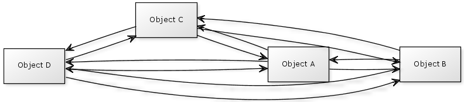
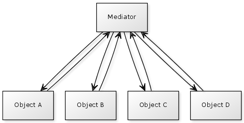
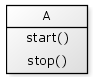
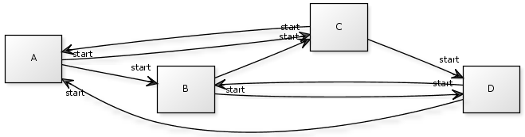
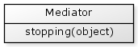
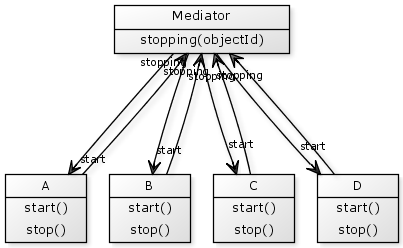

The Mediator pattern provides a technique for handling complicated communication logic between several objects.
Imagine you have a number of objects that need to interact with each other. When one of your objects is changed then it, in turn, needs to call some functions on some of the other objects. When those objects are changed, they may need to call functions on yet further objects.
This is an example of complicated object communication, where each object needs to know about several other objects.

The Mediator pattern suggests we move any logic relating to how the objects communicate into a new separate object. So rather than having the communication logic spread throughout all of the individual objects, we instead have one object that knows how all of this communication should be organised. All of our individual objects now only communicate with this new central object rather than with each other.
This new central object is our Mediator.

In the Mediator pattern the objects the Mediator communicates with are referred to as Colleagues.
Let's work through an example of how the Mediator pattern might be applied.
Suppose we have a set of objects A, B, C and D that may be started or stopped.

They have some rules of operation such as:
This set of communication is a little complicated to manage. Without a Mediator the communication logic would be embedded within the objects themselves.

An implementation of object A without a Mediator might be something like this.
{% highlight cfm %} component { variables.b = 0 variables.c = 0 // Function to partner objects together function partnerWith(b,c) { variables.b = b; variables.c = c; } function stop() { b.start(); c.start(); } function start() { // Do something } } {% endhighlight %}We can see that object A is directly partnered with (i.e. coupled with) Object B and Object C
To simplify these objects and to reduce their coupling with each other, let's introduce our Mediator.

Whenever one of our colleague objects is stopped it needs to tell the Mediator that this has occurred. In this example, our objects A, B , C and D will call the stopping() function on the Mediator when they are stopped.
Now our objects only communicate with the Mediator rather than with each other. This means that our objects are only coupled with the Mediator, rather that with multiple colleagues.

Our object A may now look something like this:
{% highlight cfm %} component { variables.mediator = 0; // Function to tell the object about the mediator function setMediator(mediator) { variables.mediator = mediator; } // Function to return the objects unique id function id() { return 'A' } function stop() { mediator.stopping(this); } function start() { // Do something } } {% endhighlight %}When stop() is called on object A, it just notifies the Mediator that it is stopping, passing itself as the parameter.
Our Mediator now handles the communication logic that deals with the other objects via the stopping() function.
{% highlight cfm %} component { // The mediator needs to know about all of the objects variables.a = 0; variables.b = 0; variables.c = 0; variables.d = 0; // Function to tell the mediator about all of the objects. function setColleagues(a,b,c,d) { variables.a = a; variables.b = b; variables.c = c; variables.d = d; } // All communication logic is now held within our mediator function stopping(object) { if (object.id() == 'A') { b.start(); c.start(); } else if (object.id() == 'B') { c.start(); d.start(); } else if (object.id() == 'C') { d.start(); a.start(); } else if (object.id() == 'D') { a.start(); b.start(); } } } {% endhighlight %}As you've see in this example, the colleague objects need to pass messages to the mediator which, in turn, forward messages onto other colleagues.
In some situations, as in this example, the colleagues have direct knowledge of the mediator object and call whatever methods are required.
An alternative to this is to implement the colleague to mediator communication using the Observer pattern, which reduces the coupling between your colleague objects and your mediator.
Wikipedia - Mediator Pattern
http://en.wikipedia.org/wiki/Mediator_pattern